Stage 1 — Survival Mode
Survival Mode
Every successful business begins with the founder doing everything. Sales, delivery, hiring, finance and operations all depend on one person.
Read More
Expandus helps founders cross the Founder Dependency Chasm™ — turning founder-led businesses into scalable, self-sustaining organisations.


Every successful business begins with the founder doing everything. Sales, delivery, hiring, finance and operations all depend on one person.
Read MoreA small team now exists, but everyone still depends on the founder. Decisions large and small keep flowing through one person as the business races to keep pace with growth.
Read MoreAs the company grows, the founder becomes the bottleneck. Approvals queue up, work accumulates, and the organisation struggles to scale beyond what one person can process.
Read MoreThe organisation looks mature on the surface, but every critical decision still flows through the founder. This is the most dangerous — and most common — stage: revenue may keep growing while organisational maturity does not.
Read MoreThe founder steps back from daily decisions as a capable leadership team runs the business — freeing them to focus on strategy, growth, key relationships and new opportunities.
Read MoreThe organisation now operates without the founder. As owner, chairperson, board member or vision keeper, the founder has built something institution-led rather than founder-led.
Read MoreEvery successful business begins with the founder doing everything. Sales, delivery, hiring, finance and operations all depend on one person.
Read MoreA small team now exists, but everyone still depends on the founder. Decisions large and small keep flowing through one person as the business races to keep pace with growth.
Read MoreAs the company grows, the founder becomes the bottleneck. Approvals queue up, work accumulates, and the organisation struggles to scale beyond what one person can process.
Read MoreThe organisation looks mature on the surface, but every critical decision still flows through the founder. This is the most dangerous — and most common — stage: revenue may keep growing while organisational maturity does not.
Read MoreThe founder steps back from daily decisions as a capable leadership team runs the business — freeing them to focus on strategy, growth, key relationships and new opportunities.
Read MoreThe organisation now operates without the founder. As owner, chairperson, board member or vision keeper, the founder has built something institution-led rather than founder-led.
Read MoreAt Expandus, we work alongside business owners as trusted advisors, coaches, and strategic partners — helping you make better decisions, build stronger leadership, and execute consistently.
Proven Business Experience
Industry-Specific Expertise
A Clear Growth Roadmap
Coaching That Fits Your Stage
Understand your current business maturity and founder dependency levels.
Identify the leadership, systems, and strategic priorities required for your next stage of growth.
Build the capabilities, accountability, and operational structure needed to scale sustainably.
Execute consistently through coaching, mentoring, implementation support, and measurable outcomes.
Expandus delivers specialised coaching frameworks built for the realities of your industry — because scaling a software company and scaling a manufacturing business demand different playbooks.
Helping software services, SaaS, product engineering, and technology companies scale beyond founder dependency.
Learn MoreHelping manufacturing, automotive, EPC, and engineering businesses strengthen systems, leadership, and execution.
Learn MoreFor fourteen years, I was the business — every decision, every client call, every fire drill ran through me first. Working with Expandus forced me to finally let go of the day-to-day. My leadership team now makes the calls I used to make myself, and more often than not, they make better ones.
We were stuck at ₹5 Cr for three years, cycling through the same plateau no matter how hard the team pushed. The Business Maturity Diagnostic showed exactly why — our systems could not scale past a certain point. The coaching gave us the framework to finally break through, and we crossed ₹12 Cr in eighteen months without burning out the team along the way.
Discover where your business is today, identify what is holding it back, and build a roadmap for scalable growth.